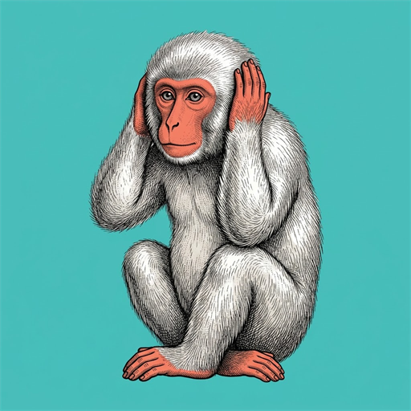

Setup
0 of 5
Getting to your first caption
- Speech model
- Bot signed in
- Bot in a server
- Voice channel
- OBS connected

CHATTERLAYERStandby
Closing the window hides it instead of ending the call, so a stray click can’t cut your captions mid-stream. Quit on the tray icon always quits.
Signs in to Discord and waits. Nobody is captioned and nothing is shared until you press Connect.
Work while a game has focus. They take those keys from every other app.
Keyboard or game audio setting captions off? Lower the sensitivity. Quiet words going missing? Raise it.
Encrypted by your OS keystore.
Signing in…
Only channels your bot can join are selectable.
Needs Developer Mode in Discord. Overrides the pickers above.
More accurate models use more memory and CPU.
One URL, pasted into an OBS Browser source. The page is already transparent.
—
Change it if something else already uses 8777.
Asks GitHub at launch whether a newer release exists. Nothing is downloaded. The only request ChatterLayer makes on its own.
Type the name of any font installed on this PC. Fonts that aren’t installed, or that co-streamers don’t have, go in the fonts folder (.ttf, .otf, .woff, .woff2). The overlay serves them itself, and each one’s name is its file name without the extension.
Applied after everything above, so it wins. Each line is a
.caption holding .speaker and .text;
.caption.partial is text still being spoken, and
.caption[data-user="<Discord ID>"] picks out one person.
--color is the speaker’s colour. Web fonts load with
@import, but only while OBS is online. A co-streamer can drop
yours by adding &css=0 to their link.
Racial and ethnic slurs are replaced with ***** in both
speech and speaker names. Whole words only, so ordinary speech
isn’t mangled.
Saved as you type. Plurals are matched automatically.